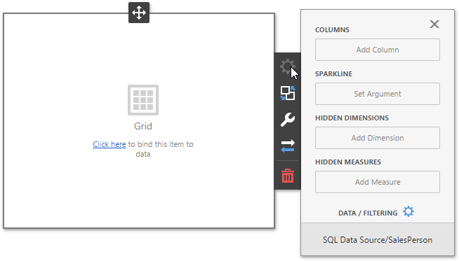
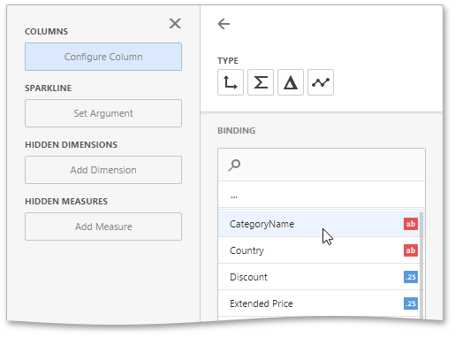
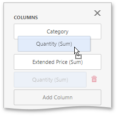
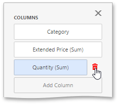
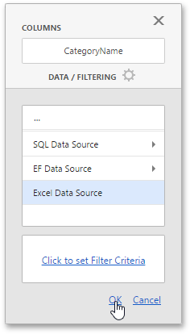

Binding Dashboard Items to Data in the Web Dashboard
This topic explains how to bind the newly created dashboard item to data source fields to visualize data.
Create Binding
To bind a dashboard item to data, invoke the dashboard item's Bindings menu to open binding settings. In this menu you can see a data source (data member) to which the dashboard item is bound and empty placeholders for data items.
The image below displays the Grid dashboard item, that binded to Sales Person query of the SQL Data Source, and corresponding data sections.

To populate a dashboard item with data, click a placeholder and choose the required field in the invoked list of data source's available fields.

To rename the data item, go to the Options section and specify the data item's caption.

Note
To learn how to bind a specific dashboard item to data, see the Providing Data topic for the required dashboard item.
Modify Binding
You can modify data binding by dragging a data item within a data section. To do this, drag the data item to the required position.

Clear Binding
You can remove the data item by clicking the Remove ( ) icon in the data item container.
) icon in the data item container.

Specify a Data Source
A dashboard can contain several data sources. By default, a dashboard item is bound to the first available data source.
You can change the default data source (or a data member / query, optionally) of dashboard items. For this, go to the dashboard item's Bindings menu and click the Data / Filtering button.

In the invoked section you can change the data source (data member) for the selected dashboard item. Click OK to save the changes.
Note
Note that this action removes all data items from the current dashboard item.